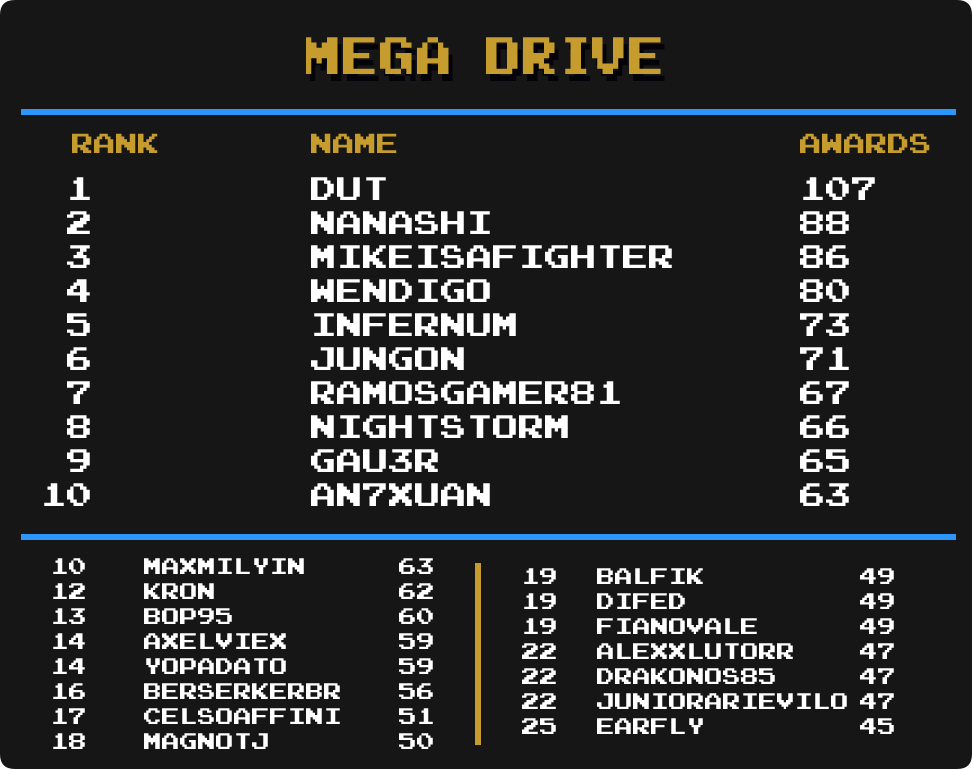

Top Masteries
 By
MrOwnership
By
MrOwnership
Contents
- Intro
- Current Champions
-
Category Rankings
- Total Awards (Including Hacks)
- Total Awards (Excluding Hacks)
- Events
- Arcade
- Atari 2600
- Dreamcast
- Game Boy
- Game Boy Advance
- Game Boy Color
- Game Gear
- Hack Champ
- Homebrew Champ
- Master System
- Mega Drive
- Nintendo 64
- NES
- Nintendo DS
- PC Engine
- PlayStation
- PlayStation Portable
- Pokémon Mini
- Saturn
- SNES
- Watara Supervision
Intro
We are going to take a look at another metric for greatness, Mastery Awards. Mastery awards are given to users when they complete every achievement for a given set in hardcore mode. Users wear mastery awards as a badge of honor on their profile page representing all the hard work they put into truly becoming a master of the game.
Below we will take a look at which users rank among the best with the most mastery awards in several categories well as notable updates from the previous month to each individual category. Check to see how you rank among the rest of the community members.
Special thanks to  Nydaxn for creating the ranking image templates.
Nydaxn for creating the ranking image templates.
Current Champions
|
|
|
Mastery Awards |
|---|---|---|
| Total Awards |  MaxMilyin MaxMilyin |
622 |
| 3DO Interactive Multiplayer |  guineu guineu |
4 |
| Apple II | guineu |
11 |
| Arcade |  DUT DUT |
50 |
| Atari 2600 |  PMniac PMniac |
89 |
| Atari 7800 | PMniac |
7 |
| Atari Jaguar | PMniac |
3 |
| Atari Lynx |
guineu,  russolini77 & russolini77 &  jared6502 jared6502
|
3 |
| ColecoVision | PMniac |
8 |
| Dreamcast |  Draco655 Draco655 |
4 |
| Events |  televandalist televandalist |
26 |
| Game Boy |  Shootzy Shootzy |
111 |
| Game Boy Advance |  bonecrusher1022 bonecrusher1022 |
103 |
| Game Boy Color | guineu |
43 |
| Game Gear | Nydaxn |
55 |
| Hack Champ |  HolyShinx HolyShinx |
182 |
| Homebrew Champ |  AuburnRDM AuburnRDM |
109 |
| Intellivision |  Jungon Jungon |
10 |
| Magnavox Odyssey 2 |
guineu & Jungon
|
3 |
| Master System | Jungon |
54 |
| Mega Drive | DUT |
107 |
| MSX |
 Blazekickn & guineu Blazekickn & guineu
|
5 |
| Nintendo 64 |  BenTobitt BenTobitt |
35 |
| Neo Geo Pocket |  Nanashi Nanashi |
4 |
| NES |  SanMarino SanMarino |
229 |
| Nintendo DS |  Olafur Olafur |
41 |
| PC Engine |  Infernum Infernum |
33 |
| PC-8000/8800 | guineu |
9 |
| PC-FX |
 Annonith & Annonith &  YahwehTzVaoth YahwehTzVaoth
|
3 |
| PlayStation |  Andrey199650 Andrey199650 |
74 |
| PlayStation Portable |  minibt minibt |
18 |
| Pokémon Mini | AuburnRDM |
18 |
| Sega 32X |
 AgentRibinski, AgentRibinski,  Aquator, DUT & Aquator, DUT &  Nevanos Nevanos
|
2 |
| Sega Saturn |  Boldewin Boldewin |
13 |
| Sega CD | Infernum |
4 |
| SG-1000 | PMniac |
6 |
| SNES |  danibodom danibodom |
167 |
| Vectrex |  QRS666 QRS666 |
2 |
| Virtual Boy |  Grahamtams Grahamtams |
5 |
| Watara Supervision |  Sarconius Sarconius |
41 |
| WonderSwan |  ShadwSonic ShadwSonic |
2 |
Category Rankings
Total Awards (Including Hacks)

-
MaxMilyin remains on top with 15 new mastery awards this month.
-
Aquator has made it into the top 25 and is tied for 24th place.
Total Awards (Excluding Hacks)

-
guineu remain on top and is not just 1 away from 600 non-hack mastery awards.
-
Infernum jumps up 1 spot into 5th place with 15 new mastery awards this month.
Notable Milestones
- Congratulations to Andrey199650 for reaching over 500 mastery awards.
- Congratulations to Aquator and
 Nevermond12 for reaching over 300 mastery awards.
Nevermond12 for reaching over 300 mastery awards. - Congratulations to AuburnRDM,
 FlareEX,
FlareEX,  Xotoco,
Xotoco,  Retrokaiser and PMniac for reaching over 200 mastery awards.
Retrokaiser and PMniac for reaching over 200 mastery awards. - Congratulations to
 WellingtonBecker,
WellingtonBecker,  AntonioFNN,
AntonioFNN,  WarioFan63,
WarioFan63,  Beulu79, Grahamtams and
Beulu79, Grahamtams and  Jaytwelve for reaching over 100 mastery awards.
Jaytwelve for reaching over 100 mastery awards.
Events
-
televandalist extends the 1st place lead with 1 new event awards this month.
-
 SlashTangent and
SlashTangent and  Snow both moved up 1 place into 6th place with 1 new mastery award this month.
Snow both moved up 1 place into 6th place with 1 new mastery award this month. -
 multonic jumps into a 5 way tie for 17th place with 1 new mastery award this month.
multonic jumps into a 5 way tie for 17th place with 1 new mastery award this month.
Arcade

-
DUT remains on top with 50 total mastery awards.
-
 missiray has jumped up 2 spots with 3 new mastery awards this month.
missiray has jumped up 2 spots with 3 new mastery awards this month.
Atari 2600

-
PMniac and
 RetroChris81 are fighting for that top spot leaving everyone else behind.
RetroChris81 are fighting for that top spot leaving everyone else behind. -
 NickGoat1990
NickGoat1990  Rossovich have made it into the top 25 and are both tied in 21st place.
Rossovich have made it into the top 25 and are both tied in 21st place. -
Andrey199650 has made it into the top 25 and is in a 5-way tie for 23rd place.
Dreamcast

- Dreamcast had 89 mastery awards given out in February and Draco655 currently holds the lead with 4 of them.
- 5 users are tied in 2nd place with 3 mastery awards.
- 18 users are tied in 7th place with 2 mastery awards.
- 43 users are tied in 25th place with 1 mastery award.
Game Boy
-
Shootzy remains on top with 111 mastery awards.
-
MaxMilyin has claimed sole ownership of 2nd place with 3 new mastery awards this month.
-
Draco655 has made it into the top 25 and is in a tie for 24th place.
Game Boy Advance
-
bonecrusher1022 stays on top with 103 total mastery awards.
-
ShadwSonic has jumped into 5th place with 2 new master awards this month.
-
 Andrevus has jumped up 4 places into a 4-way tie for 20th place.
Andrevus has jumped up 4 places into a 4-way tie for 20th place.
Game Boy Color

-
 Bendyhuman is now just 1 mastery award behind guineu.
Bendyhuman is now just 1 mastery award behind guineu. -
NickGoat1990 has made it into the top 25 and is in a 4-way tie for 9th place.
-
AuburnRDM has made it into the top 25 and is in a 7-way tie for 22nd place.
Game Gear

-
Nydaxn remains in 1st place with 4 new mastery awards this month.
-
 dcmpinguim has moved into 2en place with 9 new mastery awards this month.
dcmpinguim has moved into 2en place with 9 new mastery awards this month. -
 CasinoNeptune has made it into the top 25 and is in a 6 way tie for 13th place.
CasinoNeptune has made it into the top 25 and is in a 6 way tie for 13th place.
Hack Champ
-
HolyShinx still has a commanding lead with 182 mastery awards.
-
Aquator has surpassed 100 total mastery awards and moved into 6th place..
-
ShadwSonic jumped into a tie for 7th place with 99 total mastery awards.
-
 leislonjose has made it into the top 25 and is in 19th place.
leislonjose has made it into the top 25 and is in 19th place. -
 chocolatiel has made it into the top 25 and is in 23rd place.
chocolatiel has made it into the top 25 and is in 23rd place.
Homebrew Champ

-
AuburnRDM remains on top with 109 total mastery awards.
-
guineu has jumped into 3rd place with 5 new mastery awards this month.
-
FlareEX has made it into the top 25 with 17 new mastery awards this month and is tied in 13th place.
Master System

-
Jungon remains in 1st place 54 total mastery awards.
-
 PlagueKBR has jumped up 5 spots into a tie for 10th place.
PlagueKBR has jumped up 5 spots into a tie for 10th place. -
 professorgascan has made it into the top 25 and is in a 5-way tie for 19th place.
professorgascan has made it into the top 25 and is in a 5-way tie for 19th place. -
AuburnRDM has made it into the top 25 and is in a 6-way tie for 24th place.
Mega Drive

-
DUT remains in 1st place 107 total mastery awards.
-
 drakonos85 moved into a 3-way tie for 22nd place.
drakonos85 moved into a 3-way tie for 22nd place.
Nintendo 64
-
BenTobitt has taken over the 1st place spot with 2 new mastery awards this month.
-
 freezestar has moved up 6 spots into a 7-tie for 17th place.
freezestar has moved up 6 spots into a 7-tie for 17th place. -
Bendyhuman has made it into the top 25 and is in a 5-way tie for 24th place.
NES

-
SanMarino remains in 1st place with 229 total master awards.
-
 RomaKiev has moved into a 3-way tie for 10th place.
RomaKiev has moved into a 3-way tie for 10th place. -
FlareEX has moved into a tie for 20th place.
Nintendo DS
-
Olafur extends the lead with 8 new mastery awards this month.
-
 tinycyan has moved into 2nd place with 4 new mastery awards this month.
tinycyan has moved into 2nd place with 4 new mastery awards this month. -
 xTyrea64 has moved into a tie for 8th place.
xTyrea64 has moved into a tie for 8th place. -
 MiningMario has made it into the top 25 and is in a 3-way tie for 16th place.
MiningMario has made it into the top 25 and is in a 3-way tie for 16th place.
PC Engine
-
Infernum remains in the top spot with 2 new mastery award this month.
-
Jungon jumps up 6 spots into a 3-way tie for 12th place with 3 new mastery awards this month.
PlayStation

-
Andrey199650 has taken the lead with 2 new mastery awards this month.
-
 DungeonMaster has moved up 4 places into 6th place.
DungeonMaster has moved up 4 places into 6th place. -
 BahamutVoid has made it into the top 25 and is in a 4-way tie for 25th place.
BahamutVoid has made it into the top 25 and is in a 4-way tie for 25th place.
PlayStation Portable
-
minibt holds onto the lead with 18 total mastery awards.
-
 vaanxbahn has jumped up 15 spots into 2nd place with 6 new mastery awards this month.
vaanxbahn has jumped up 15 spots into 2nd place with 6 new mastery awards this month. -
 FlavourSavior has made it into the top 25 and is in a 3-way tie for 21st place.
FlavourSavior has made it into the top 25 and is in a 3-way tie for 21st place.
Pokémon Mini

-
AuburnRDM has taken the top spot this month with 9 new mastery awards.
-
 MaddieKittyTV has made it into the top 25 and is in a 7-way tie for 13th place.
MaddieKittyTV has made it into the top 25 and is in a 7-way tie for 13th place. -
 drisc has made it into the top 25 and is in a 13-way tie for 20th place.
drisc has made it into the top 25 and is in a 13-way tie for 20th place.
Saturn
-
Boldewin continues to dominate the Saturn leaderboard.
- Literally nothing changed in this leaderboard.
SNES
-
danibodom extends their 1st place lead by 6 new mastery awards this month.
-
MaxMilyin has moved into a tie for 3rd place.
-
 metalbubble403 has made it into the top 25 and is tied for 24th place.
metalbubble403 has made it into the top 25 and is tied for 24th place.
Watara Supervision